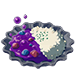

Monstery Curry

Description
This type of curry is made exactly like any other curry but with the addition of
an extract very hard to come by, sold only by a strange man during the night.
It is said to have very unpredictable healing properties.
Monster Curries are considered an unusual take on curry, since their use of Monster Extract
mean they don't rely heavily on spices.
Ingredients
- One bottle of Monster Extract
- Hylian Rice
- Goron Spice
- Optional: Monster pieces
Steps
- Heat a pot over medium-high heat.
- Add the monster pieces, if included, and wait until cooked.
- When the meat looks cooked on the outside, add the goron spice around the meat and pour in water to cover the mixture by 1 or 2 fingers.
- Once the spices are incorporated add the monster extract.
- While the curry is being cooked, in another pan/pot add one part of rice by two parts of water and let it cook until the rice looks soft.
- Serve on a plate with equal parts of rice and curry to enjoy.
 Take me Home
Take me Home